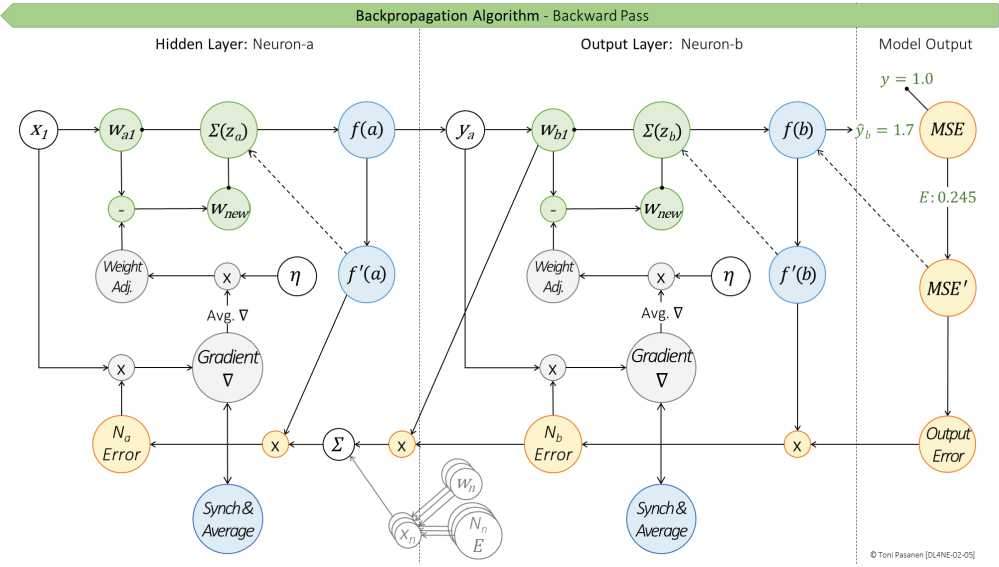
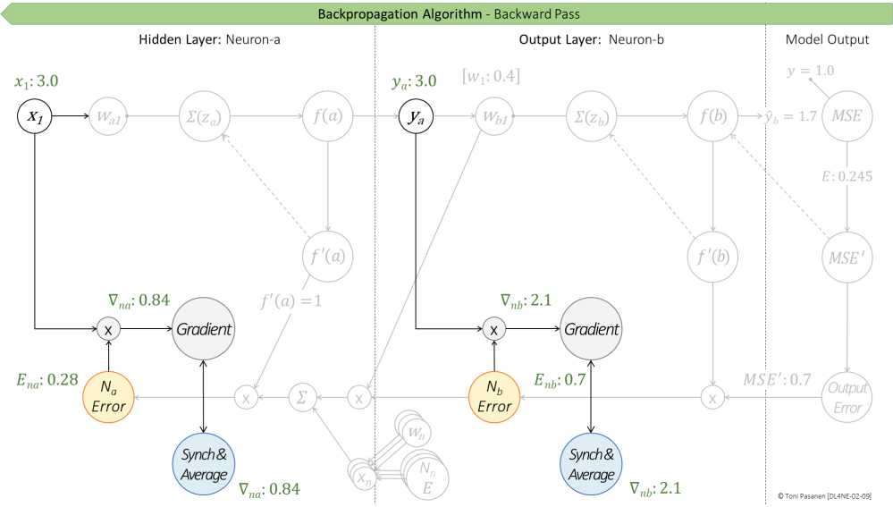

书 p61-68 把反向拆成：① 对误差求导（输出错多少）② 对激活求导（Sigmoid 斜率）③ 对权重求导（输入贡献）。三者相乘 = 梯度（陡峭方向）。链式法则就是“错→斜率→贡献”连乘，别跳步。
w_new = w_old - LR × 梯度（即 w -= LR·∇）。梯度告诉你“哪个方向最陡”，LR 决定“走多远”，负号表示“往误差减小走”。书中 p68-70 逐权重算 Δw，跟着算一次就通了。
更新完再做一次前向，E 应该变小。如果没变小：LR 不对、算错导数、或陷入饱和。这是“闭环验证”思维，网工最熟：改完配置一定要再测一次。


默写更新公式并解释负号；用自己的话复述链式三段。